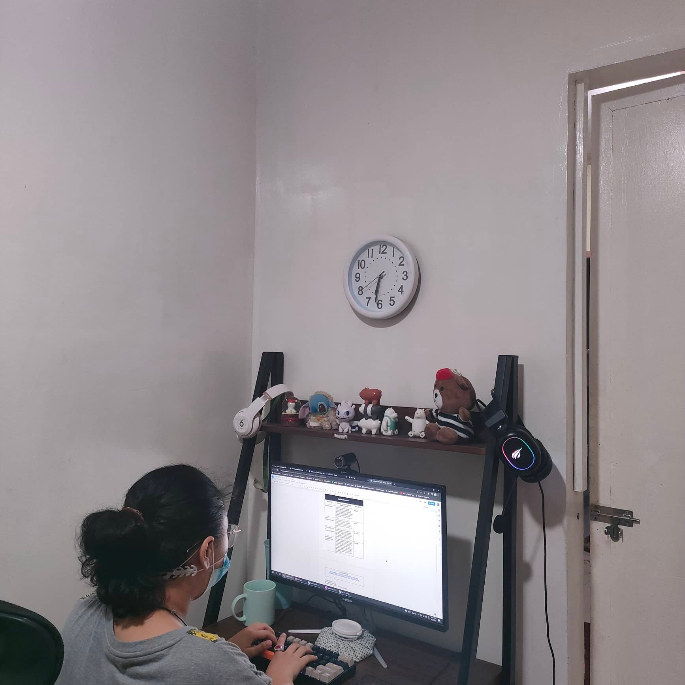

Images from:
Abellera, Virnina
Amper, Charles
Del Fierro, Roman
Lungtad, Heiley
signed and dated 'G. A. Storey./1879' (lower left)
oil on canvas
40 3/4 x 50 3/8 in. (103.5 x 128 cm.)
Oil in canvas
Support:1016 x 762mm
Frame: 1375 x 1115 x 150 mm